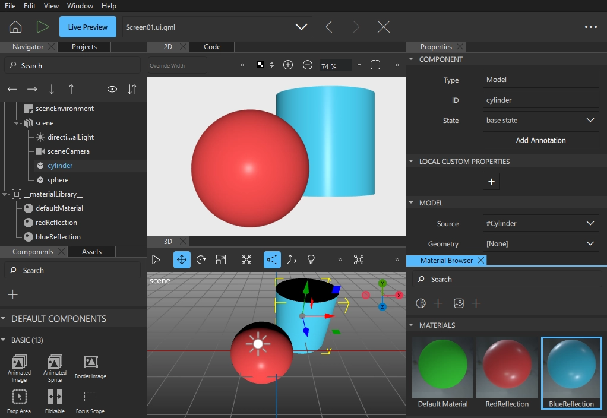
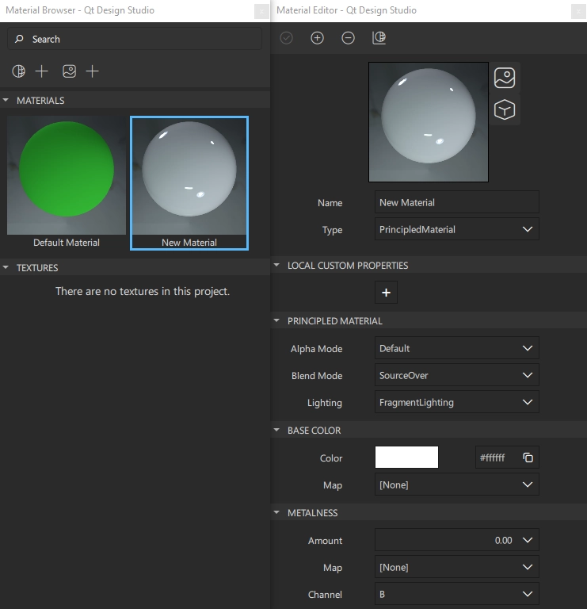

Materials and Shaders

Materials and shaders define how object surfaces are rendered in Qt Design Studio and live preview. As you change the properties of materials, new shaders are generated accordingly, and the property values are bound. The complexity of a shader depends on a combination of the properties that are set on it, and the context of the scene itself.
It is recommended that you use the Material Editor and Browser when working with materials, but you can also add materials using the components library.
The materials that you used in your imported scenes are imported to Qt Design Studio as Qt Quick 3D components. When you add a View3D component, it contains a DefaultMaterial component. You can use the following predefined Qt Quick 3D components to add materials to models:
- Default material
- Principled material
- Custom material
- Texture
Before a model can be rendered in a scene, it must have at least one material to define how the mesh is shaded. The DefaultMaterial component is the easiest way to define such a material. The PrincipledMaterial component specifies the minimum amount of properties. The CustomMaterial component enables you to construct your own materials.
You can use the Texture component to apply textures to materials. It defines an image and how the image is mapped to meshes in a 3D scene. For more information, see Textures.
You can create and modify materials in Material Editor and Material Browser. The availability of the properties depends on the material type.

You can animate material properties in the Timeline view, as instructed in Creating Timeline Animations.